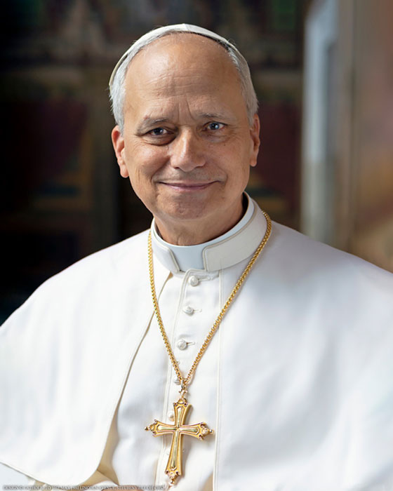

Pope Leo XIV: From Chicago to the Chair of Saint Peter
Robert Francis Prevost’s journey to becoming Pope Leo XIV spans the United States, Peru, and Rome—a life shaped by Augustinian formation, missionary service, episcopal leadership, and responsibility at the heart of the Catholic Church.
An Augustinian Beginning
Born in Chicago on September 14, 1955, Robert Francis Prevost grew up with his parents, Louis Marius Prevost and Mildred Martínez, and his brothers, Louis Martín and John Joseph. After studying at the Minor Seminary of the Augustinian Fathers, he attended Villanova University, earning a degree in Mathematics in 1977 while also studying Philosophy. That same year, he entered the novitiate of the Order of Saint Augustine. He made his first profession in 1978 and his solemn vows in 1981.
Prevost pursued theological studies at the Catholic Theological Union in Chicago before traveling to Rome to study Canon Law at the Pontifical University of Saint Thomas Aquinas. He was ordained a priest on June 19, 1982, and later completed a doctorate focused on the role of the local prior in the Augustinian order.
A Missionary Life in Peru
Peru became central to Prevost’s ministry. After serving in the Augustinian mission in Chulucanas, he joined the mission in Trujillo, where his work combined formation, scholarship, Church governance, and parish life. Over eleven years, he served as community prior, formation director, instructor for professed members, judicial vicar, and professor of Canon Law, Patristics, and Moral Theology. He also provided pastoral care in a poor suburb of Trujillo and administered another local parish.
His leadership soon extended across the Augustinian order. Elected Provincial Prior in Chicago in 1999, he became Prior General of the Order of Saint Augustine two and a half years later and was confirmed for a second term in 2007. Returning to Chicago in 2013, he served in formation and provincial leadership until Pope Francis appointed him Apostolic Administrator of Chiclayo and Titular Bishop of Sufar in 2014.
From Chiclayo to Rome
Ordained a bishop on December 12, 2014, Prevost adopted the episcopal motto In Illo uno unum, expressing Saint Augustine’s teaching that Christians, though many, are one in Christ. Pope Francis appointed him Bishop of Chiclayo in 2015. He later served as second vice-president of the Peruvian Episcopal Conference and held responsibilities connected with its economic, cultural, and educational work.
His responsibilities increasingly reached beyond Peru. He became a member of the Congregation for the Clergy in 2019 and the Congregation for Bishops in 2020, while also serving as Apostolic Administrator of Callao. In January 2023, Pope Francis called him to Rome as Prefect of the Dicastery for Bishops and President of the Pontifical Commission for Latin America, promoting him to Archbishop.
Cardinal and Pope
Created Cardinal on September 30, 2023, Prevost was assigned the Diaconate of Saint Monica. As head of the Dicastery for Bishops, he joined Pope Francis on Apostolic Journeys, took part in both sessions of the Synod of Bishops on synodality, and was appointed to several Vatican dicasteries and commissions. He was later promoted to the Order of Bishops and given the title of the Suburbicarian Church of Albano.
His election as Pope Leo XIV made him the 267th Bishop of Rome, the first Augustinian Pope, and the second Roman Pontiff from the Americas. His biography brings together the intellectual discipline of a mathematician and canon lawyer, the pastoral experience of a missionary and parish leader, and the administrative perspective of a bishop, religious superior, and Vatican prefect.
Source: Adapted exclusively from Vatican News biography.